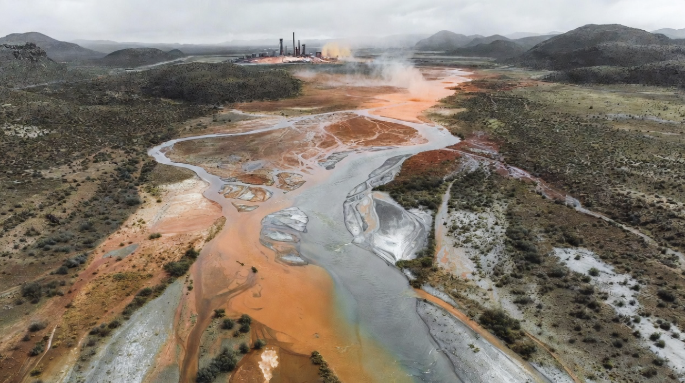
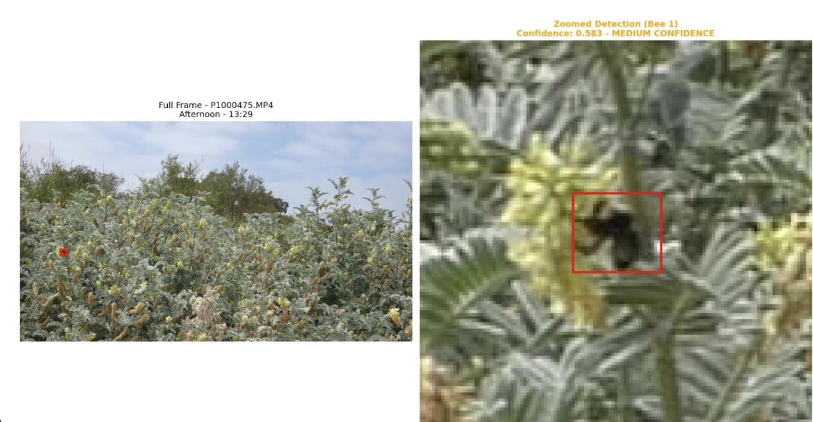
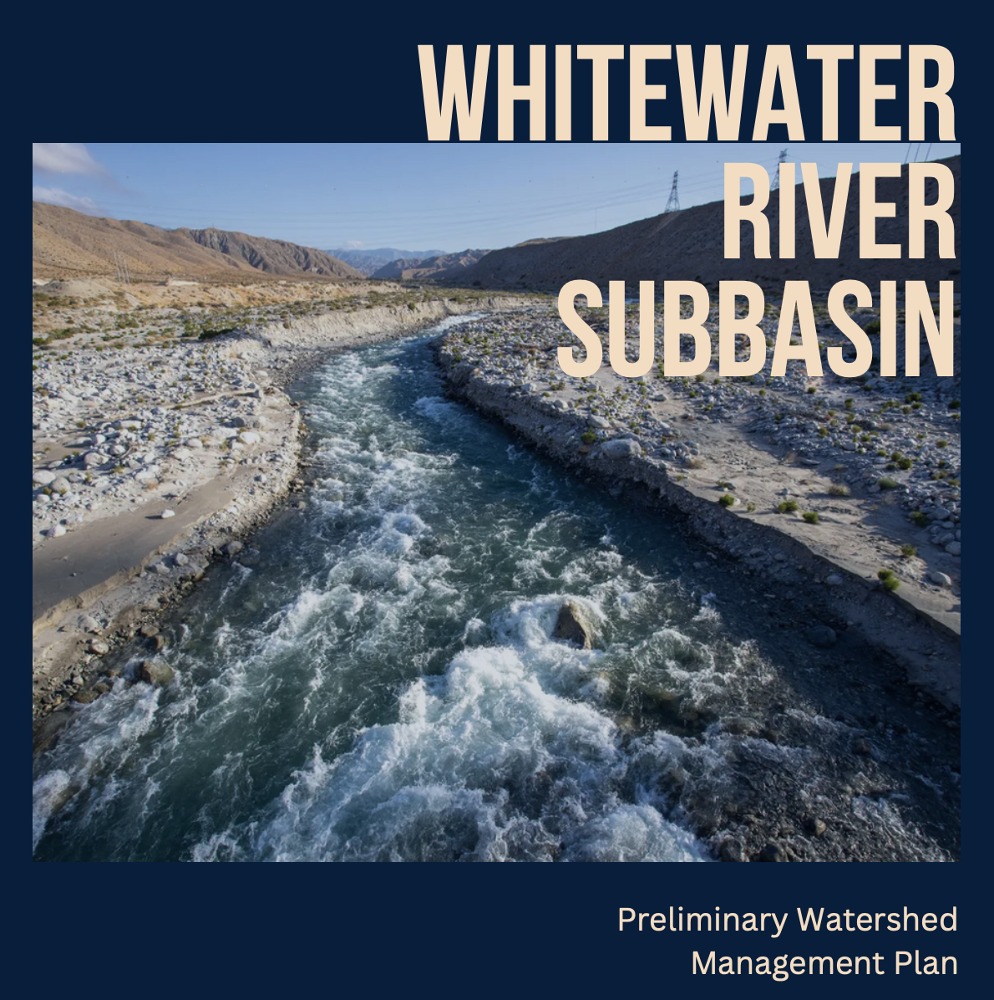

Applied environmental science · Data visualization · Watershed planning · Machine learning

A comprehensive graduate-level environmental assessment examining river health, pollution sources, contaminant transport pathways, and evidence-based pollution remediation strategies for long-term river restoration. Produced as a master's-level capstone deliverable at the UC Santa Barbara Bren School.
View Full Report
Developed and trained YOLOv8 deep learning object detection models to automate pollinator monitoring for two federally endangered coastal plant species at UCSB's North Campus Open Space restoration site in Goleta, CA. Integrated with HyDaT tracking to quantify pollinator visitation events, timing, and duration.

Watershed ManagementA detailed watershed management plan for the Whitewater River addressing land use, hydrology, water quality, and long-term conservation strategies. Policy and science integrated throughout.
View PlanAn interactive R Shiny web application built on real NOAA CalCOFI oceanographic survey data, visualizing California coastal water quality trends, marine chemistry, and environmental indicators across decades of monitoring data.
Launch AppA study conducted at Reef tanks at UC Santa Barbara exploring the use of calcium carbonate from discarded bivalve shells to enhance ocean alkalinity. This project partnered with a local seafood restaurant to assess benefits of recycling discarded bivalve shells.
Read ThesisTranslating science into strategy for a healthier planet